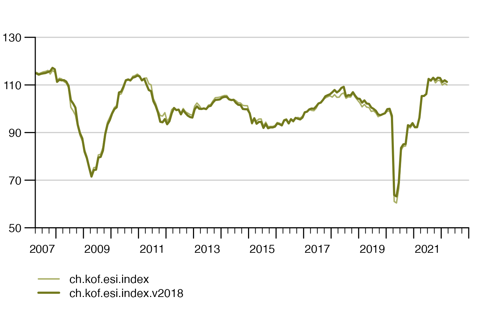

Composed Data Collections
Playlists for Your Data
Source:vignettes/articles/collections.Rmd
collections.RmdData collections are a set of KOF time series identifiers (key) that allow you consume a previously defined selection of time series – very much comparable to a playlist on your favorite music streaming service. The collections does not contain the actual data, but their identifiers. Collections make it easy to consume the same series on a regular basis like, e.g., in a economic monitoring setup.
Note that at the time of writing this the API does not allow users to define custom collections. Still, collections are useful to group time series and refer to one single collection name to consume a (large) number of time series as opposed to make single collections and listing all keys every time we consume the data.
kof_collections <- list_available_collections()
head(kof_collections)
#> collection_name
#> baro_vintages_monthly baro_vintages_monthly
#> bs_indicator bs_indicator
#> ch.kof.trsm.fcst.summer ch.kof.trsm.fcst.summer
#> ch.kof.trsm.fcst.winter ch.kof.trsm.fcst.winter
#> ch.kof.trsm.fcst.year ch.kof.trsm.fcst.year
#> ds_consensus_qtr ds_consensus_qtr
#> collection_description is_public
#> baro_vintages_monthly KOF Barometer vintages TRUE
#> bs_indicator KOF Geschäftslage Indikator und Subbranchen TRUE
#> ch.kof.trsm.fcst.summer KOF Tourism Forecast Summer Season TRUE
#> ch.kof.trsm.fcst.winter KOF Tourism Forecast Winter Season TRUE
#> ch.kof.trsm.fcst.year KOF Tourism Forecast Year TRUE
#> ds_consensus_qtr KOF Consensus Forecast TRUEListing available collections is straight forward just like consuming
time series within a collection. The get_collection command
returns a list of time series in this case the Open
Government Data (OGD) composition of the Economic Sentiment
Indicator which consists of two time series, the current ESI and a
2018 version of the indicator:
esi <- get_collection("ogd_ch.kof.esi")
# tstools is good a conveniently plotting list of time series..
tstools::tsplot(esi)